um pouco sobre minha história
um pouco sobre minha experiências
um pouco sobre meus meus gostos

este portfólio nasceu como uma forma de documentar minha evolução como desenvolvedor e reunir os projetos que
marcaram minha jornada na programação.
além de explorar o desenvolvimento Frontend, utilizo este espaço para experimentar novas tecnologias, criar
interfaces modernas e transformar ideias em aplicações funcionais.
Aqui você encontrará projetos que vão desde aplicações web até sistemas embarcados e robótica. Entre eles estão um diário escolar com chat integrado, aplicações desenvolvidas em Flutter, projetos de robótica utilizando ROS2, ESP32 e Raspberry Pi, além de diversos experimentos com eletrônica envolvendo sensores, motores e automação.

cada projeto representa um desafio diferente e faz parte do meu processo de aprendizado. Meu objetivo é evoluir continuamente, desenvolver soluções cada vez mais completas e compartilhar essa trajetória através deste portfólio. este é apenas o começo. conforme adquiro novos conhecimentos e participo de novos projetos, este espaço continuará crescendo junto com a minha carreira.
se você procura alguém curioso, dedicado e apaixonado por tecnologia, seja muito bem-vindo. espero que este portfólio mostre um pouco do que sou capaz de construir e do que ainda pretendo criar.
um pouco sobre minha história
um pouco sobre minha experiências
um pouco sobre meus meus gostos